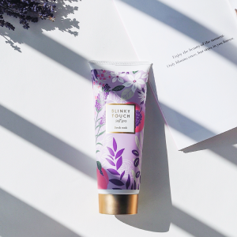

ABOUT


MIKI SEKIYA
関谷 美妃（せきや みき）
1995年生まれ
好きなもの：SNS・写真・カフェ巡り・K-POP・映画・海・デザイン
苦手なもの：パクチー・大きな音・朝・寒さ
▼仕事の場面でよく言われる言葉
- #真面目
- #周りがよく見えている
- #ホスピタリティが高い
▼プライベートでよく言われる言葉
- #こだわりが強い
- #優しい
- #コミュ力高い
-
2021 現在
デザイナーとして活動中
スクールでの学習を終えてからは、自主制作やサイトレビューなどインプットとアウトプットを積極的に行っている。 デザインコンペに参加したり案件を受注したりと、様々な分野のデザインにチャレンジしながら、転職活動を行なっている。
-
2020.05
▲
2019.07デザインスクールに通う
クリエイティブな仕事と一生使えるスキルを目指してキャリアチェンジすることを決め、仕事をしながらWebデザインスクールのTECH CAMPに通い始める。 仕事は忙しくなる一方だったが、デザインの学習は楽しく、「毎日継続」を目標に卒業制作まで終えた。
-
2020.11
▲
2017.12ベンチャー企業に入社
大学時代の友人の誘いで、自動運転開発のベンチャー企業に入社。購買と総務を担当し、ゼロからの立ち上げを経験。 チーム構築やマネジメント、オフィス移転などの大きなプロジェクトマネジメントにも関わり、会社への貢献は勿論のこと、自身の成長にも繋がった。
-
2017.10
▲
2015.05大手化粧品会社に入社
美容が好きでもっと学びたい気持ちがあったことと、今までの接客業経験を活かしたいとの思いで、ビューティーアドバイザーとして化粧品会社に入社。 美容や栄養の知識はもちろんのこと、店舗運営やお客様に寄り添う接客を学び、新人/後輩の教育も経験した。
-
2015.03
▲
2013.04青山学院女子短期大学に入学
幼い頃から英語や海外に関心があり、現代教養学科 国際専攻に入学。国際問題や国際文化、英語や韓国語などを学ぶ。 自分の卒論をゼミの先生に褒められ、文章を書くことに少し自信がつく。
昔から何かを作ることが好きで、広告ポスターやWebサイト・雑誌などのデザインにとても興味がありました。
社会人4年目になった頃、夫や知り合いが自分でWebサイトや本を作っているのを見て、よりデザインに興味を持ったのをきっかけに、夫の後押しもありデザイナーを目指して勉強を始めました。
デザインの勉強を続ける中で、最近は学習や課題制作だけでなく、クラウドソーシングで案件を受注したり、デザインコンペにも積極的に参加しており、自分の作品が駅に掲載される広告として選ばれたこともあります。
実際に自分のデザインが掲載され、人々の目に止まるということや、それを見た人が実際にアクションを起こして「人とサービスが繋がる」ということに、物作りの楽しさと喜びを感じました。
この経験も経て、現在ではスクールの課題以外で、オリジナルの制作物を20個ほど制作しています。
今後は、自分のデザインが人々に正確な情報として伝わるだけでなく、「このデザインいいな」「素敵」といったポジディブな感情を人々に与えられるようなデザイナーとして、世の中へ貢献していきたいです。
- 
プライベートでは、写真とInstagramが大好きで、写真をよく撮ります。オリンパスを使っています。
現在、Instagramを通じて様々な企業様からPRの依頼を受けています。 将来的には商品撮影などにもチャンレンジして、クリエイティブの幅を広げていきたいです。